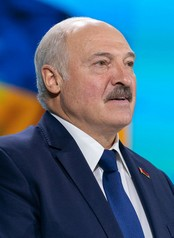
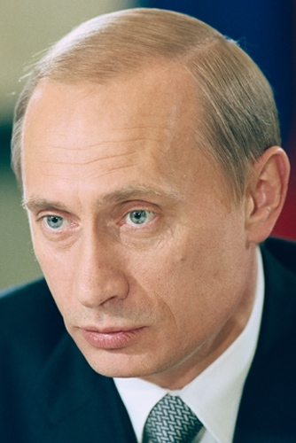
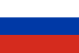
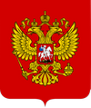
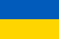
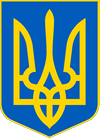

Государства и географические регионы
Постсоветские государства обычно делят на следующие пять групп. Принцип, по которому государство относят к той или иной группе, основывается на географических и культурных факторах, а также на истории взаимоотношений с Россией.
- Россия (в свою очередь состоит из нескольких географических регионов: Восточная Европа, Прибалтика, Северная Азия и Центральная Азия);
- Прибалтика (Северная Европа): Латвия, Литва и Эстония;
- Восточная Европа: Белоруссия, Молдавия и Украина;
- Закавказье (Передняя Азия и Восточная Европа): Азербайджан, Армения и Грузия;
- Центральная Азия: Казахстан, Киргизия, Таджикистан, Туркмения и Узбекистан.
Список стран на территории Постсоветского пространства1
| Страна | Столица | Герб и Флаг | Дата независимости / дата распада СССР | Территория (км2) | Население | Примечания |
|---|---|---|---|---|---|---|
Государства — члены ООН    |
||||||
| Белорусская ССР (сейчас — Белоруссия) | Минск | 
|
25 августа 1991 | 207 600 | 9 475 600 |
Официально — Белорусская Советская Социалистическая Республика (белор. Беларуская Савецкая Сацыялістычная Рэспубліка), республика в составе СССР. 25 декабря 1951 — изменён белорусский флаг 25 августа 1991 — объявлена независимость, без проведения референдума о выходе из СССР. 19 сентября 1991 — официальное название и флаг изменены на Республика Беларусь (белор. Рэспубліка Беларусь). 26 декабря — независимость состоялась де-факто из-за прекращения существования СССР.
7 июня 1995 — изменён белорусский флаг: |
| СССР (сейчас - Россия) | Москва | 

|
26 декабря 1991 | 22 402 200 | 292 610 734 |
Официально — Образован по Союзному договору от 30 декабря 1922 года на месте бывшей Российской империи объединением четырёх советских республик — РСФСР, Украинской ССР, Белорусской ССР и ЗСФСР.
1 ноября 1991 — Съезд народных депутатов РСФСР внёс поправки в Конституцию РСФСР и,
среди прочего, изменил российский флаг — 12 декабря 1991 — Верховный Совет РСФСР денонсировал Договор об образовании СССР 1922 года, Россия вышла из состава СССР. 21 декабря 1991 — Совет глав государств СНГ принял решение о поддержке продолжения членства Советского Союза в ООН, включая Совет Безопасности, Россией. 24 декабря 1991 президент РСФСР Борис Ельцин проинформировал Генсека ООН о том, что членство Советского Союза в ООН будет продолжено Российской Федерацией (РСФСР), в связи с чем просил вместо названия «Союз Советских Социалистических Республик» использовать наименование «Российская Федерация». 25 декабря 1991 — Верховный Совет РСФСР принял закон об изменении названия государства с Российская Советская Федеративная Социалистическая Республика на Российская Федерация (Россия). 26 декабря 1991 — Верхняя палата Верховного Совета СССР (Совет Республик) приняла Декларацию № 142-Н о прекращении существования СССР.
11 декабря 1993 — изменён российский флаг: В Уставе ООН до сих пор именуется Союзом Советских Социалистических Республик. |
| Россия | Москва | 

|
12 декабря 1991 | 17 125 191 | 146 781 095 | |
| Украинская ССР (сейчас - Украина) | Киев | 
|
24 августа 1991 | 603 549 | 42 248 598 |
Официально — Украинская Советская Социалистическая Республика (укр. Українська Радянська Соціалістична Республіка), республика в составе СССР. 21 ноября 1949 — изменён украинский флаг: Украинская ССР 16 июля 1990 — Верховный Совет УССР принял «Декларацию о государственном суверенитете Украины» 24 августа 1991 — Верховный Совет УССР принял «Акт провозглашения независимости Украины» и изменил официальное название на Украина (укр. Україна) 1 декабря 1991 — состоялся Всеукраинский референдум 1991 года, на котором было подтверждено провозглашение независимости Украины
28 января 1992 — изменён украинский флаг: |
| Непризнанные государства | ||||||
| ДНР2 | Донецк | 

|
7 апреля 2014 (от Украины) | 7 853 | 2 244 547 | Оспаривается статус территорий между Украиной и РФ
|
| ЛНР2 | Луганск | 

|
12 мая 2014 (от Украины) | 8 377 | 1 450 000 | |

Фото глав Государств Постсоветского пространоства
Республика Беларусь 🇧🇾
Александр Григорьевич Лукашенко
Президент Республики Беларусь (с 20 июля 1994)
Российская Федерация 🇷🇺
Президент Российский Федерации (с 7 мая 2012)
Украина 🇺🇦

Владимир Александрович Зеленский
Президент Украины (с 2019)
Государственные символы стран Постсоветского пространства
Республика Беларусь


Российская Федерация

Украина

Примечания:
- На это сайте будут представлены страны: Беларусь, Российская Федерация, Украина (с ДНР и ЛНР).
- Независимость ДНР и ЛНР не признают члены ООН